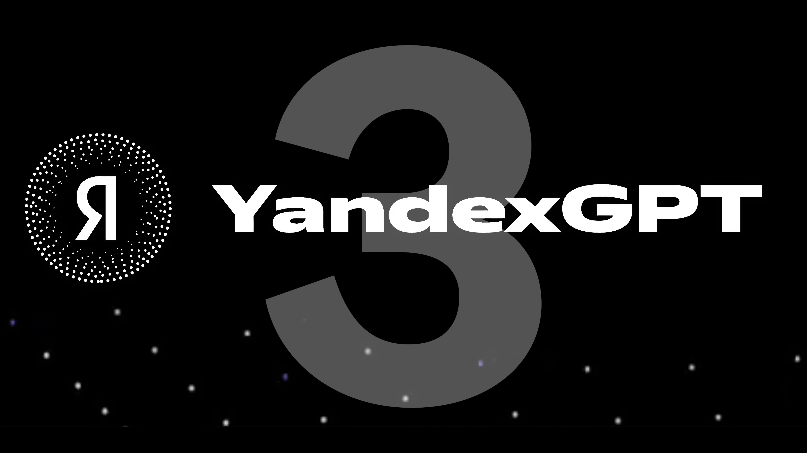
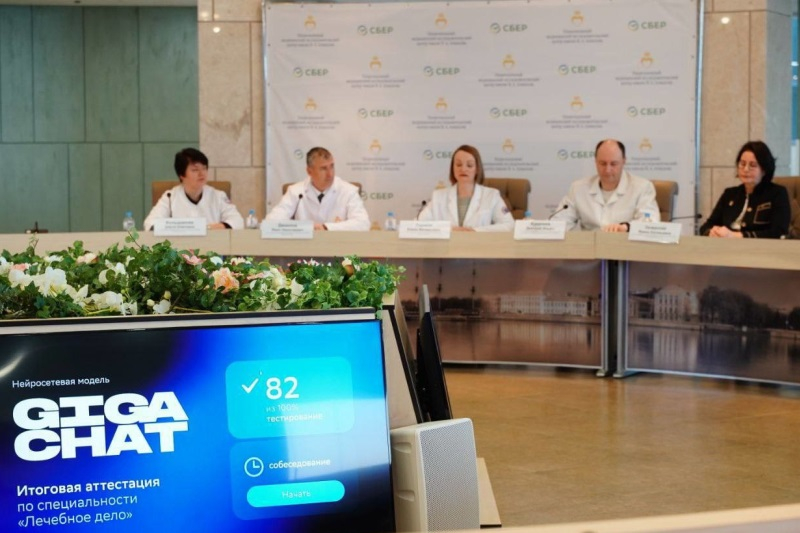

Перспективные направления
Одним из самых перспективных направлений отечественных разработок в сфере ИТ является искусственный интеллект (ИИ). Российские ученые активно работают над созданием инновационных алгоритмов и моделей для обучения машин, что позволяет значительно повысить эффективность работы компьютерных систем. В частности, разрабатывается ИИ-ассистент, способный автоматически обрабатывать большие объемы информации и предоставлять пользователю релевантные результаты.
Yandex GPT3

Яндекс представил третье поколение больших языковых моделей YandexGPT. Первая из них, YandexGPT 3 Pro, уже доступна на сайте Yandex Cloud.
YandexGPT 3 Pro лучше работает со сложными запросами и точнее следует заданному формату ответов. Также она допускает меньше фактических и стилистических ошибок.
Эта нейросеть ориентирована на бизнес-задачи, но может отвечать на любые вопросы. Лучше всего YandexGPT 3 Pro проявляет себя в клиентской поддержке, маркетинге, рекламе,
онлайн-продажах и цифровых коммуникациях. Кроме того, YandexGPT 3 Pro может составлять договоры, счета, нормативную документацию и должностные инструкции.
Протестировать YandexGPT 3 Pro может любой желающий на специальной странице Yandex Cloud. Зарегистрированным пользователям доступно 100 бесплатных запросов в час.
Yandex ART — нейросеть для генерации изображений и анимаций
Пресс-служба «Яндекс» рассказала Хабру о релизе диффузионной нейросети Yandex AI Rendering Technology (YandexART), которая создаёт изображения и анимации по текстовому описанию. В компании отметили, что нейросеть понимает российский культурный код.
Особенность YandexART заключается в том, что нейросеть знает известные места в России, выдающихся личностей разных эпох и знакома с персонажами сказок и мультфильмов. Для обучения специалисты «Яндекса» использовали набор данных из 330 млн изображений с текстовым описанием. Картинки для датасета отбирали с помощью режима тройной фильтрации, чтобы до обучения дошли лучшие.
Для повышения качества генерации задействовали дополнительный этап обучения с подкреплением. После генерации нескольких сотен изображений на одну тему сотрудники выбирают самые удавшиеся. Так нейросеть научилась генерировать красивые картинки. Кроме того, разработчики применили новый алгоритм распознавания текста, что помогает нейросети правильно понимать пользователей.
YandexART уже работает в «Шедевруме» и «Яндекс Бизнесе». В первом случае пользователи могут создавать изображения по произвольному описанию, а во втором — картинки генерируются автоматически при создании рекламных объявлений. В ближайшее время поддержка YandexART появится в «Яндекс Клавиатуре».
Нейросеть GigaChat от «Сбера» сдала экзамен на врача
Нейросеть «Сбера» GigaChat успешно справилась с экзаменом высшего медицинского учреждения по направлению подготовки «Лечебное дело», который необходим для присвоения квалификации «врач-лечебник». Для этого алгоритм прошёл тестирование и ответил на вопросы экзаменационного билета, т.е. выполнил те же действия, что и любой студент, окончивший шесть курсов медицинского вуза. 
В состав экзаменационной комиссии входили профессоры терапии, хирургии, акушерства и гинекологии Института медицинского образования НМИЦ им. В.А. Алмазова, которые поставили GigaChat итоговую оценку 4 балла. Стандартный билет к устному экзамену состоит из трёх задач по терапии, хирургии, акушерству и гинекологии, а также 3-5 дополнительных вопросов, касающихся составления плана лечения, назначения дополнительных обследований и др. В дополнение к этому алгоритм прошёл тестирование из 100 вопросов, набрав 82 % (порог прохождения 70 %).
GigaChat справился с экзаменом благодаря полугодовому обучению, в рамках которого использовался датасет из 42 Гбайт специализированных данных, включая учебные материалы, рекомендации для обучения студентов в медицинских вузах России, монографии, методические руководства и др. Отмечается, что несмотря на сдачу экзамена GigaChat, не является врачом и полученные от алгоритма рекомендации необходимо утвердить у лечащего врача.
«Нейросетевая модель Gigachat успешно справилась с экзаменом по лечебному делу и показала свои компетенции аттестационной комиссии, которые позволят ей в дальнейшем стать помощником как для человека, врачей, так и системы здравоохранения в целом. Gigachat — это основа для создания персональных ассистентов, в том числе и медицинских. Компания СберМедИИ разрабатывает сервисы на базе искусственного интеллекта, включая сервисы для анализа и оценки жалоб и анамнеза пациента, данных из его электронной медицинской карты», — Заявил Владимир Кох, генеральный директор СберМедИИ.